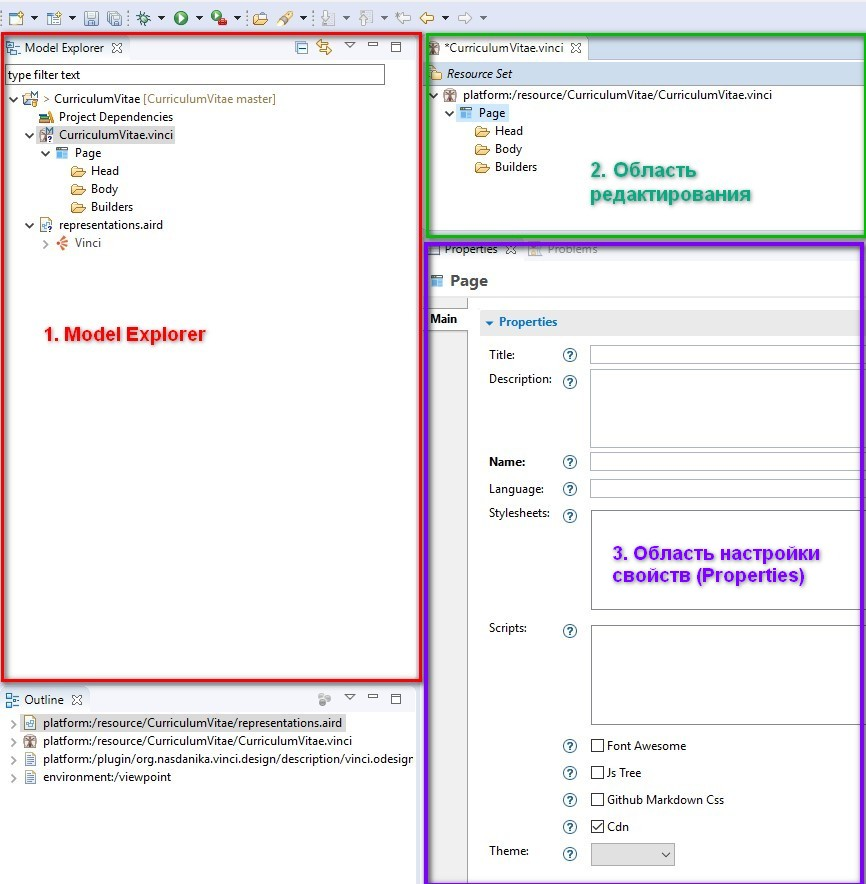
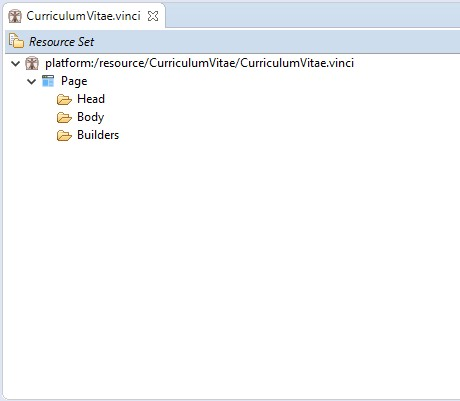
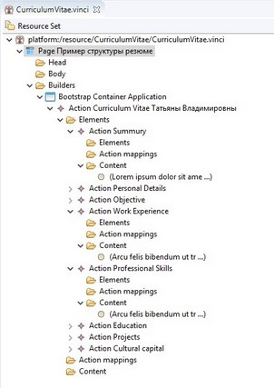
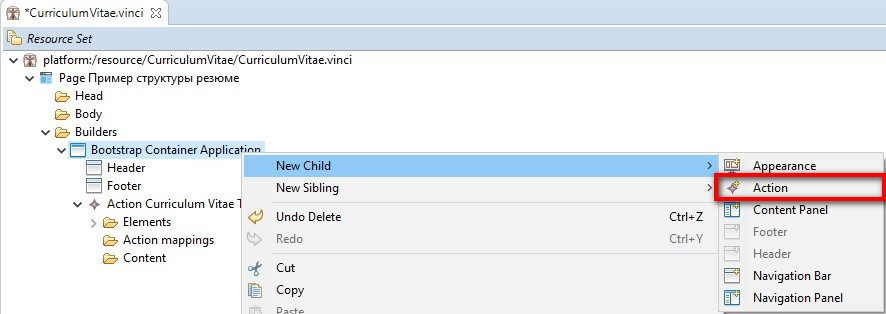
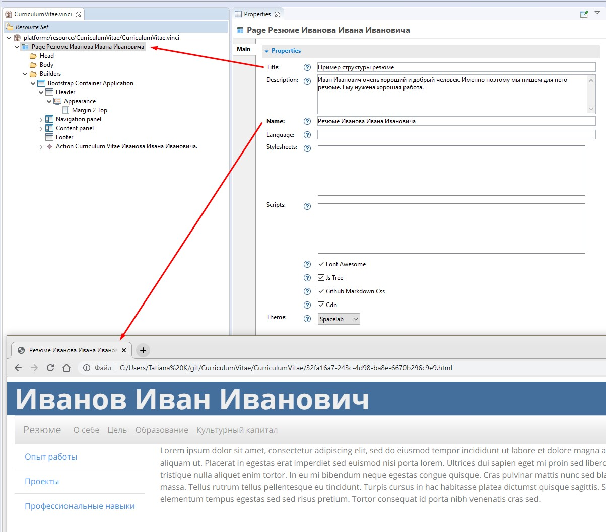
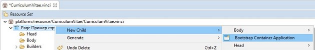
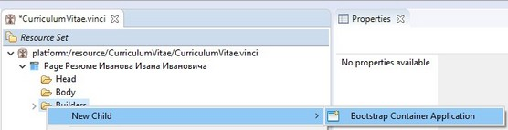
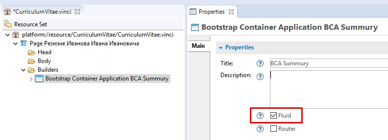

Корневой элемент Page - содается автоматически, присутствует в новом проекте. Необходима настройка. (см. раздел 1.3 )
Bootstrap Container Application- выделяем Page -> ПКМ -> New child -> Bootstrap Container Application.
После создания Bootstrap Container Application можно приступать к построению модели нашего сайта
Итак, мы создали свой первый проект. Теперь надо научиться в нём ориентироваться.
Nasdanika Tool Suit является своеобразной “надстройкой” над одной из популярнейших сред разработки - Eclipse. Поэтому, чтобы не запутаться в проекте, нам надо немного разобраться в интерфейсе этой IDE.
Мы видим, что окно программы разделено на несколько областей:
Следовательно, порядок действий такой:

Первое, что мы видим в нашем новом проекте - это зарождающаяся иерархия элементов. Она пока что очень маленькая и скромная, но в процессе разработки сайта она будет развиваться и расти. Ниже представлена иерархия элементов нового проекта и, для примера, структура 8 страничного сайта.
 
Дочерние элементы создаются щелчком правой кнопки мыши на родительском элементе и выборе New child (нового ребёночка), которого мы хотим создать. Для разных элементов модели дети будут разными и их количество может быть тоже разным.
Если у родителя может быть не более одного ребёнка какого-либо типа, то после создания первого экземпляра этот дочерний элемент становится неактивным в контекстном меню.
Корневым элементом модели является Page. Начинать построение модели нужно с создания для него дочернего элемента Bootstrap Container Application, под которым создаются уже все остальные элементы. Настройки корневого элемента Page влияют на все дочерние элементы. Рассмотрим их подробнее в разделе 1.3.

От настроeк корневого элемента Page зависит служебная информация, которая будет содержаться в теге <head>.
В поле Title указываем название страницы. Это название будет отражаться в дереве элементов модели.
В поле Name указываем название страницы, которое пользователь увидит на вкладке в браузере. Если поле Name не заполнено, то страница не сгенерируется.
Поле Description - служебное, пользователю на сайте оно не видно, используется для описания того, что мы хотим разместить на нашем сайте и какова цель его создания.
Поля Stylesheets и Scripts не обязательны для заполнения, сайт отлично сгенерируется и без них. Но, если вас не устраивают поддерживаемые темы Bootctrap, то вы можете подключить собственную таблицу стилей и собственные скрипты.
Ставим галочку в чек-боксе Font Awesome если собираемся использовать иконки с этого замечаетльного сайта (а мы собираемся).
Ставим галочку в чек-боксе JS Tree если собираемся использовать представление боковой навигационной панели в виде дерева.
В чек-боксе Github Markdoun Css тоже ставим галочку. Теперь мы знаем по каким именно правилам будет интерпритироваться наш Markdoun текст.
И в чек-боксе CDN ставим галочку, чтобы можно было подключать к нашей странице стили Bootsrap, расположенные где-то далеко, не на нашем компьютере.
Выбираем какую-нибудь тему в поле Theme. Эта настройка подключает к нашей странице тему оформления Bootstrap. Как выглядят эти темы можно посмотреть здесь: https://bootswatch.com/
Правильные минимальные настройки элемента Page и соотношение их с элементами страницы и с элементами модели приведены на иллюстрации.

Добавляем BootstrapContainerApplication на элементе Page или на элементе Builders.
New Child -> Bootstrap Container Application
 или 
Далее переходим в Properties и в чек-боксе Fluid устанавливаем галочку, если хотим, чтобы содержимое нашего сайта занимало 100% от ширины окна браузера.
Если эта галочка не будет поставлена, то все содержимое сгруппируется в центре окна, а по бокам будут большие поля.

{kind=link}